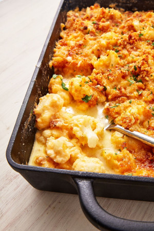

Keto Mac n Cheese

Description
Delicious mac n cheese recipe that is keto friendly.
Ingredients
- Butter, for baking dish
- 2 medium heads cauliflower, cut into florets
- 2 tbsp. extra-virgin olive oil
- Kosher salt
- 1 c. heavy cream
- 6 oz. cream cheese, cut into cubes
- 4 c. shredded cheddar
- 2 c. shredded mozzarella
- 1 tbsp. hot sauce (optional)
- Freshly ground black pepper
For the spicy mayo
- 4 oz. pork rinds, crushed
- 1/4 c. freshly grated Parmesan
- 1 tbsp. extra-virgin olive oil
- 2 tbsp. freshly chopped parsley, for garnish
- Preheat oven to 375° and butter a 9”-x-13” baking dish. In a large bowl, toss cauliflower with 2 tablespoons oil and season with salt. Spread cauliflower onto two large baking sheets and roast until tender and lightly golden, about 40 minutes.
- Meanwhile, in a large pot over medium heat, heat cream. Bring up to a simmer, then decrease heat to low and stir in cheeses until melted. Remove from heat, add hot sauce if using and season with salt and pepper, then fold in roasted cauliflower. Taste and season more if needed.
- Transfer mixture to prepared baking dish. In a medium bowl stir to combine pork rinds, Parmesan, and oil. Sprinkle mixture in an even layer over cauliflower and cheese.
- Bake until golden, 15 minutes. If desired, turn oven to broil to toast topping further, about 2 minutes.
- Garnish with parsley before serving.
Nutrition (per serving): 665 calories, 34 g protein, 12 g carbohydrates, 3 g fiber, 5 g sugar, 55 g fat, 29 g saturated fat, 1,151 mg sodium